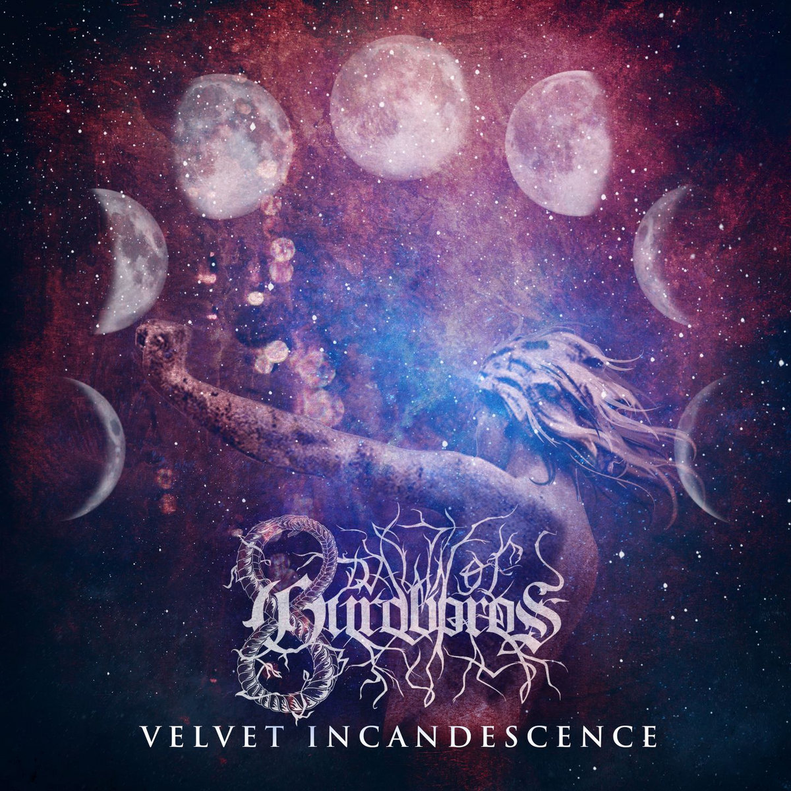

Discography
The Art of Morphology, 2020
Track List
- Revivified Spirits
- Pinnacle Induced Vertigo
- Gateway to Tenebrosity
- Lunar Cathexis
- Spiral of Hypnotism
- Serpent's Charm
- Sorrow's Eclipse
- Valiant Abscond
Velvet Incandescence, 2023
Track List
- Healing Grounds
- Testudines
- Iron Whispers
- Levitating Pacifics
- Rise From Disillusion
- Castigation
- Cephalopodic Void
- Velvet Moon
Bioluminescence, 2025
Track List
- Bioluminescence
- Nebulae
- Slipping Burgundy
- Poseidon's Hymn
- Dueling Sunsets
- Static Repetition
- Fragile Tranquility
- Mournful Ambience